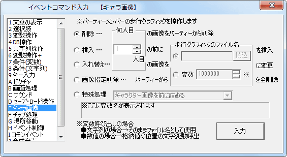
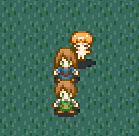

イベントコマンド 【パーティ画像】
プレイヤーキャラクターたちの画像を変更します。隊列を組ませることもできます。

※パーティーとは … プレイヤーキャラクターたちは隊列を組んで歩かせることが可能です、この一団をここでは「パーティー」と呼びます。パーティーはプレイヤーキャラクターを含めて最大6人までです。
【各処理の機能】
・削除
[指定]人目のキャラをパーティーから削除します。
・挿入
[指定]人目の前に歩行グラフィックを挿入します。「歩行グラフィックのファイル名」は「読込」ボタンを使って直接選んでもよいですし、文字列変数から読み込むこともできます。変数欄に数値を入れると、それが通常変数の場合はその格納値の位置の文字列変数を読みに行き、文字列変数の場合はその文字列のファイルを読み込みます。
・入れ替え
[指定]人目のキャラの画像を別の画像に変更します。現在画像がないキャラクターと入れ替えることもできます。
・画像指定削除
パーティから、指定した画像のキャラクターを全て削除します。
・特殊処理 以下の処理から一つ選んで実行できます。
-キャラクター画像を前に詰める … 空白キャラがいた場合、その間を詰めます。
-キャラクター画像を全消去する … パーティ全員のキャラクター画像を消去します。
-仲間全員を主人公の位置にワープ … 仲間全員をプレイヤーキャラの位置にワープさせます。
-仲間と主人公の動きのシンクロ開始 … 仲間との現在の位置関係を保ったまま移動させます（シンクロ）。例えば、横一列に並んで歩かせるといったことが可能です。
-仲間と主人公のシンクロ解除 … シンクロを解除します。
-パーティ全員を透明にする … 全員を透明にして、見えなくします。イベント中でよく使うでしょう。
-パーティ全員の透明を解除する … 全員の透明状態を解除します。
-パーティ全員の画像を記憶 … パーティ全員の画像を記憶します。
-記憶したパーティ全員の画像をロード … 記憶したパーティ全員の画像を呼び出します。
-パーティの隊列をオンにする（※初期状態） … 仲間が主人公の後を付いて動くようにします。仲間に動作指定をしても、主人公が動くとそれに従って動きます。
-パーティの隊列を解除（仲間が停止する） … 仲間が主人公の後を付いてこないようにします。主人公の移動に影響されないので、動作指定をするときはこちらを使うといいでしょう。
【使用例】

このように隊列を組ませることが可能です。